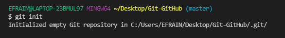

El comando git init crea un nuevo repositorio de Git. Puede utilizarse para convertir un proyecto existente y sin versión en un repositorio de Git, o para inicializar un nuevo repositorio vacío. La mayoría de los demás comandos de Git no se encuentran disponibles fuera de un repositorio inicializado, por lo que este suele ser el primer comando que se ejecuta en un proyecto nuevo. Al ejecutar git init, se crea un subdirectorio de .git en el directorio de trabajo actual, que contiene todos los metadatos de Git necesarios para el nuevo repositorio. Estos metadatos incluyen subdirectorios de objetos, referencias y archivos de plantilla. También se genera un archivo HEAD que apunta a la confirmación actualmente extraída.
